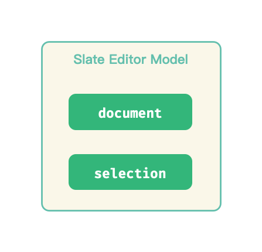
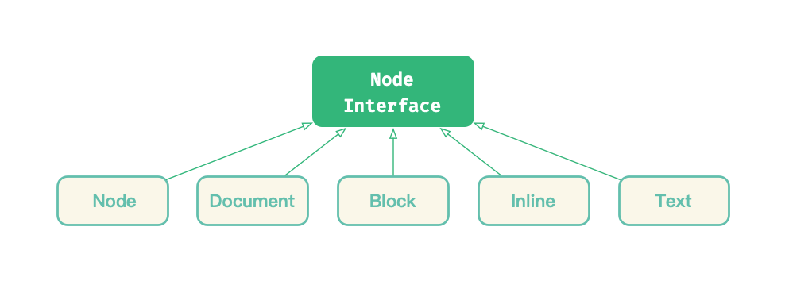
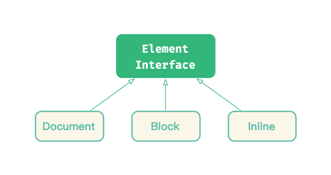
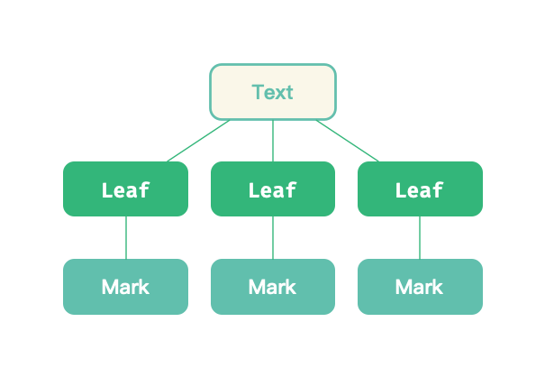
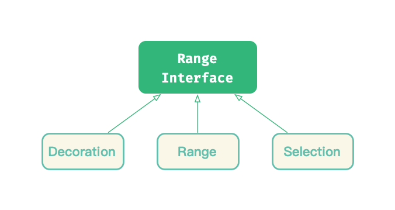
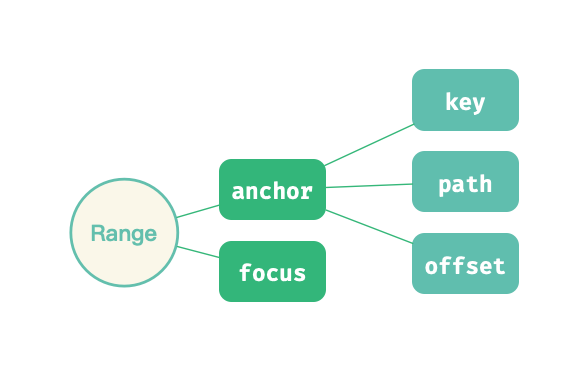
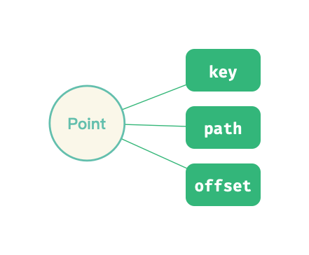
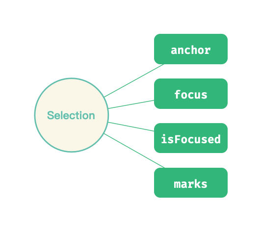

Slate.js 中的富文本
Slate.js 在数据模型的设计宗旨是 「Mirror the DOM」，即尽可能按照现行的 DOM 标准去抽象自己的数据模型。这种亲近现行标准的设计理念，降低了开发者接入编辑器的知识负担：我熟悉 HTML ，就能很快上手 Slate.js。
我们分别从对节点和选区的设计上，看看 Slate.js 是怎么模拟 DOM 的。

Node Mirror
在 Slate.js 中，同样区分了：
- Node：最高级的抽象，包含了访问节点和节点内容的方法
- Element：表示节点容器的 Node，Slate.js 含有 Document、Block 和 Inline 三种类型的 Element
- Text：表示节点文本内容的 Node
Node

类似于 DOM，Slate.js 同样使用 Node 作为基础抽象，因此，它也需要考虑：
- 如何划分节点类型
- 如何处理节点关系
- 如何表示节点内容
- 如何绑定节点数据
一个 Node 对象含有如下属性：
key：节点在当前文档中的索引data：节点绑定的数据nodes：节点的子孙object：节点类型text：这是一个计算属性，返回节点的文本内容
另外也包含一系列静态方法用于构造模型：
class Node {
static create(attrs = {}) {}
static createList(elements = []) {}
static createProperties(attrs = {}) {}
static fromJSON(value) {}
static toJSON(options = {}) {}
}
除了 Model，Slate 还定义了 Node Interface ，在当中定义了节点遍历、节点内容访问、节点规范化等能力：
class NodeInterface {
getText() {}
getNode(path) {}
getPath(key) {}
normalize() {}
validate() {}
}
Slate.js 通过 mixin 的方式，将这些能力注入到 Node Model 中：
minxin(NodeInterface, [Document, Block, Inline, Text]);
Element

类似于 HTML Element，Slate.js 将节点类型分为：
- Document Element：表示编辑器的整个文档树
- Block Element: 表示编辑器中的块级元素
- Inline Element：表示了编辑器中的行内元素
Element Model 同样具有属性：
key：节点在当前文档中的索引data：节点绑定的数据nodes：节点的子孙object：节点类型text：一个计算属性，返回节点的文本内容
除此之外，Element Model 中也定义了构造对象的静态方法：
class Document {
static create(attrs = {}) {}
static fromJSON(object) {}
static toJSON(options = {}) {}
}
类似于 Node Interface，Slate.js 也是通过 Element Interface 来定义 Element 具备的能力：
class ElementInterface {
addMark(path, mark) {}
getParent(path) {};
getPreviousNode(path) {};
getNextNode(path) {};
findDescendant(predicate = identity) {};
insertNode(path, node) {}
removeNode(path) {}
// ...
}
这些能力通过 mixin 注入到 Element 中：
mixin(ElementInterface, [Document, Block, Inline]);
Text

类似于 HTML Text，Slate.js 也定义了 Text Model 来表示节点的文本内容，它具有这些属性：
key：节点在当前文档中的索引object：节点类型text：一个计算属性，返回节点的文本内容leaves: 文本叶子节点，不同格式（例如加粗，斜体等）的文本，将会被分拆为若干个 leafmarks：文本节点所包含的所有 mark（标记）
与 Node 与 Element 不同的是，Text 作为最末层抽象，能力都被内聚在了 Text Model 中。
Mark & Leaf
在模型层，Slate.js 是通过 mark 来标记文本格式，在视图层，开发者可以通过 CSS 或者 <strong> 这样的 tag 来展示格式化文本。
Slate.js 根据 mark 类型的不同，将 Text Node 拆分为了若干 Leaf。每个 Leaf 对象含有这些属性：
text: string：leaf 的文本内容mark: Mark: leaf 被标记上的 mark
Path
Slate.js 设计了 Path Model 来表示节点在节点树中的位置，它是一个数值数组，循着 Path 的每个元素，我们就能找到这个节点。下例中，[0,1] 就表示了 C 节点的位置：

[]则表示了根节点的位置
Selection Mirror
Range

Slate.js 参考了 DOM Selection 和 DOM Range 的设计，设计了 Range Model 作为选区的基础抽象，并通过 Range Interface 注入了选区相关能力。
Range Model 也采用 anchor、focus 来描述一个片段的起终点，更进一步，Slate.js 设计了 Point 这个数据结构来描述选区位置：
anchor：range 起点focus：range 终点

另外，它还具有下面这些计算属性：
end与start：如果说anchor/focus是 range 的「事实」起终点，那么start/end则是 range 的「视觉」起/终点，start总在end之前（或者二者重叠）isBackward与isForward：选区方向是向前还是向后isCollapsed与isExpanded：是否折叠isSet与isUnset：起点终点是否均被设置
Point
在 DOM Selection 中，通过 anchorOffset/focusOffset和 anchorNode/focusNode 来标识选区的起始位置，Slate 则设计了 Point Model 来内聚 offset 和 node 信息：

一个 Point 对象具有如下属性：
key：坐落的 Text Node 的索引path：坐落的 Text Node 位置offset：在对应 Text 节点上偏移了多少字符
Selection
Slate.js 中的 Selection 遵循了现代浏览器的设计，一个 Selection 对象不再允许含有多个 Range 对象，它含有属性：
anchor：选区起点focus: 选区终点isFocused: 当前选区是否被聚焦marks：当前选区包含的文本格式（有助于我们实现格式刷/清除格式等功能）

Selection 的能力则是通过 Range Interface 注入的。
总结
一方面，Slate.js 尽可能地按照现行 HTML 标准去抽象编辑器的内核模型，让传统的 Web 应用开发者更加平滑地过度到编辑器的开发中。另一方面，Slate.js 也较为克制地扩展了 HTML 的数据模型，例如设计了 Point Model 来表示坐标，设计了 Path Model 来表示节点位置等等，以更加语义化的抽象，理清了选区和节点的「空间属性」。
更新编辑器内容，也就是更新编辑器的节点树，那么，首先我们要能够找到待更新的节点，接下来，我们就看看，Slate.js 中是如何寻址一个节点的。